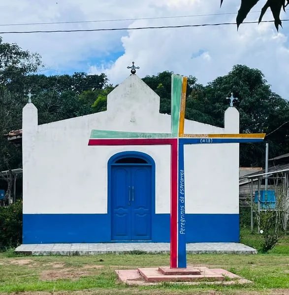
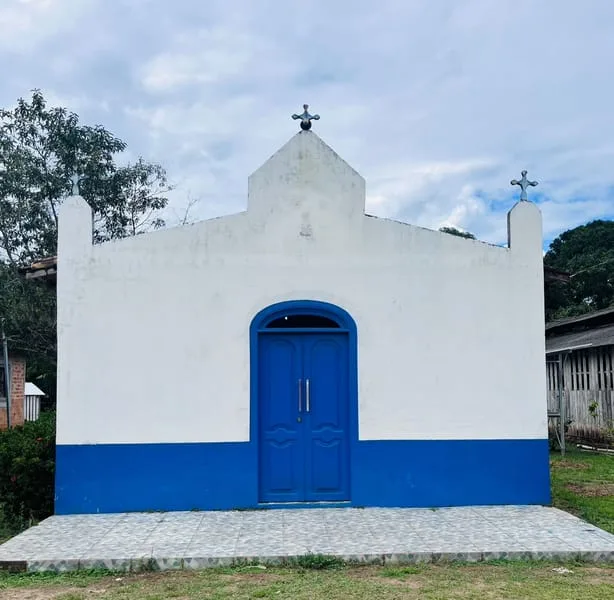
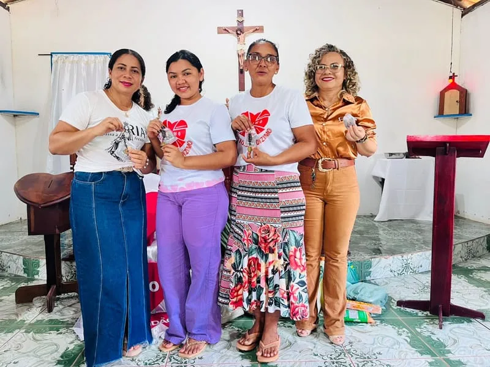
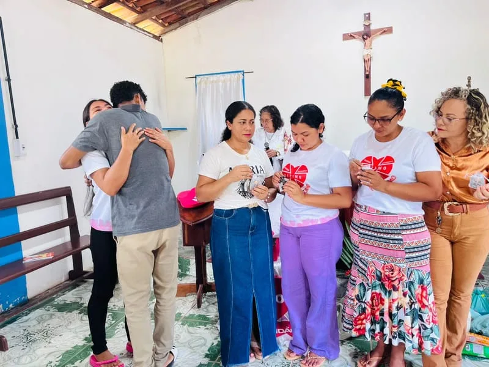
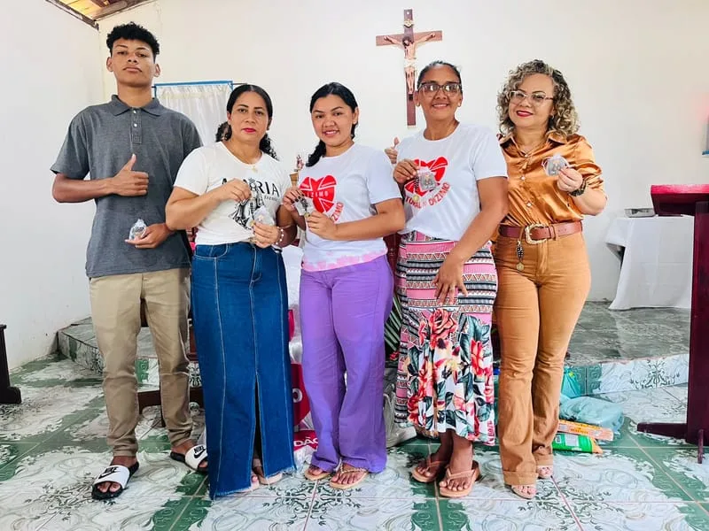
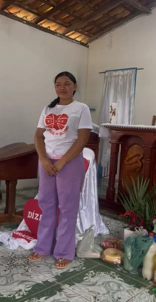

← Voltar para início
Nossa Senhora do Desterro
A Igreja Católica de Nossa Senhora do Desterro é o coração espiritual da Vila Melancial. Construída pela comunidade, a igreja é um símbolo de fé e devoção que atravessa gerações.
A padroeira, Nossa Senhora do Desterro, é celebrada anualmente com uma grande festividade que reúne fiéis de toda a região. A igreja realiza missas semanais, batizados, casamentos e catequese para crianças e adultos.
Horários de Missas
- Domingo: 8h
- Quarta-feira: 19h
- Sexta-feira: 19h
Serviços Pastorais
- Catequese para crianças e adolescentes
- Preparação para o batismo
- Encontros de jovens
- Pastoral familiar
- Visitas aos enfermos





